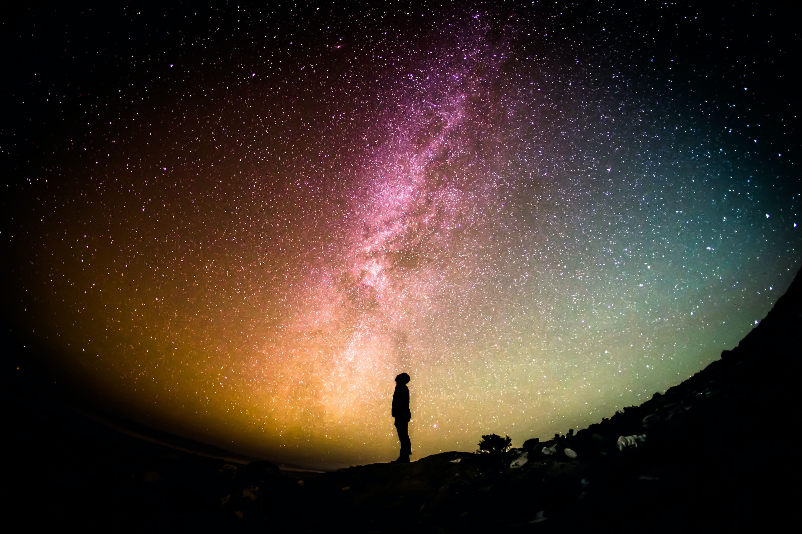

The third planet that orbits the Sun is Earth. It revolves around the Sun in an eliptical orbit and takes about 365 days to complete one revolution around the Sun. Earth also rolates about its axis. This rotation is the reason for day and night. Every 24 hours Earth completes one rotation.



Lección 1
El tercer planeta que órbita alrededor del Sol es la Tierra. Gira alrededor del Sol en una orbita elíptica y le toma alrededor de 365 dias completar una traslasion alrededor del sol. La tierra tambien gira alrededor de su eje. Esta rotación es la causante del dia y la noche. Cada 24 horas la Tierra completa una rotacion.